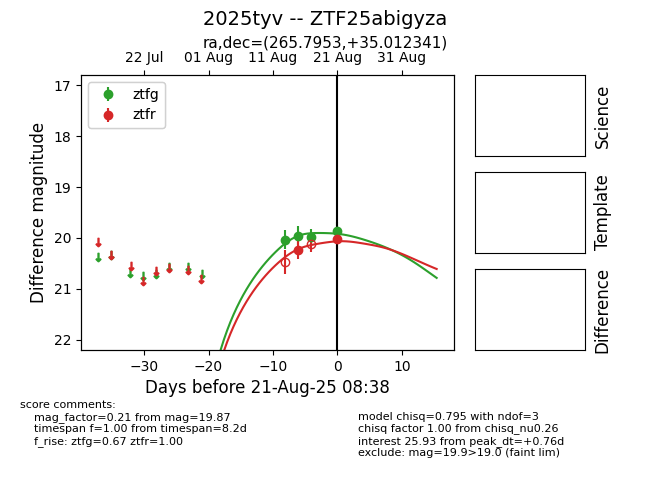

Target 2025tyv at 2025-08-19 12:24, see:
FINK: fink-portal.org/ZTF25abigyza
Lasair: lasair-ztf.lsst.ac.uk/objects/ZTF25abigyza
ALeRCE: alerce.online/object/ZTF25abigyza
TNS: wis-tns.org/object/2025tyv
YSE: ziggy.ucolick.org/yse/transient_detail/2025tyv
alt names
2025tyv (yse,tns)
ZTF25abigyza (ztf,fink)
coordinates:
equatorial (ra, dec) = (265.7953,+35.01235)
galactic (l, b) = (60.0537,+28.39322)
photometry
last ps1::g=19.94, ps1::r=20.15
1 ps1::g, 1 ps1::r detections
